computer vision
view markdownuseful packages
- https://www.cellpose.org/ - cell segmentation
- Active shape model - Wikipedia
- intro (cootes 2000)
- Model-based methods make use of a prior model of what is expected in the image, and typically attempt to find the best match of the model to the data in a new image
- model
- requires user-specified landmarks $x$ (e.g. points for eyes/nose on a face)
- simplest model - use a typical example as a prototype + compare others using correlation
- invariances: given a set of image coordinates, for all rotations / scales / translations - try them all so that the sum of distances of each shape to the mean is minimized (called Procrustes analysis)
- shape model learns low-dim model of $x$, maybe using $k$ top bases of PCA
- inference
- nearest neighbor: iteratively find transformation + shape model parameters to represent landmarks
- classification: non-trivial to define a goodness of fit measure for the landmarks - something like distance between points and strongest nearby edges
- active shape model - for each landmark, look for nearby groundtruth, adapt PCA values, apply reasonable constraints, then iterate
- improve speed by doing this at large scales before going to more detailed scales
- snakes - active contour models (kass et al. 1988)
- deformable spline - pulled towards object contours while internal forces resist deformation
what’s in an image?
- vision doesn’t exist in isolation - movement
- three R’s: recognition, reconstruction, reorganization
fundamentals of image formation
projections
- image I(x,y) projects scene(X, Y, Z)
- lower case for image, upper case for scene
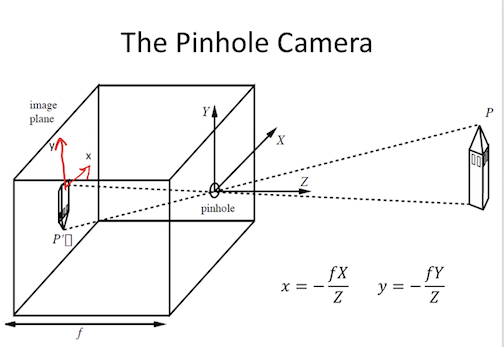
- f is a fixed dist. not a function
- box with pinhole=center of projection, which lets light go through
- Z axis points out of box, X and Y aligned w/ image plane (x, y)
- perspective projection - maps 3d points to 2d points through holes
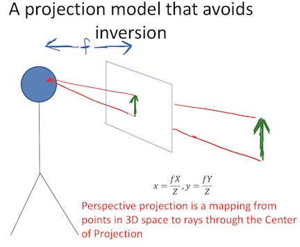
- perspective projection works for spherical imaging surface - what’s important is 1-1 mapping between rays and pixels
- natural measure of image size is visual angle
- orthographic projection - appproximation to perspective when object is relatively far
- define constant $s = f/Z_0$
- transform $x = sX, y = sY$
phenomena from perspective projection
- parallel lines converge to vanishing point (each family has its own vanishing point)
- pf: point on a ray $[x, y, z] = [A_x, A_y, A_z] + \lambda [D_x, D_y, D_z]$
- $x = \frac{fX}{Z} = \frac{f \cdot (A_x+\lambda D_X)}{A_z + \lambda D_z}$
- $\lambda \to \infty \implies \frac{f \cdot \lambda D_x}{\lambda D_z} = \frac{f \cdot D_x}{D_z}$
- $\implies$ vanishing point coordinates are $fD_x / D_z , f D_y / D_z$
- not true when $D_z = 0$
- all vanishing points lie on horizon
- nearer objects are lower in the image
- let ground plane be $Y = -h$ (where h is your height)
- point on ground plane $y = -fh / Z$
- nearer objects look bigger
- foreshortening - objects slanted w.r.t line of sight become smaller w/ scaling factor cos $\sigma$ ~ $\sigma$ is angle between line of sight and the surface normal
radiometry
- irradiance - how much light (photons) are captured in some time interval
- radiant power / unit area ($W/m^2$)
- radiance - power in given direction / unit area / unit solid angle
- L = directional quantity (measured perpendicular to direction of travel)
- $L = Power / (dA cos \theta \cdot d\Omega)$ where $d\Omega$ is a solid angle (in steradians)
- irradiance $\propto$ radiance in direction of the camera
- outgoing radiance of a patch has 3 factors
- incoming radiance from light source
- angle between light / camera
- reflectance properties of patch
- 2 special cases
- specular surfaces - outgoing radiance direction obeys angle of incidence
- lambertian surfaces - outgoing radiance same in all directions
- albedo * radiance of light * cos(angle)
- model reflectance as a combination of Lambertian term and specular term
- also illuminated by reflections of other objects (ray tracing / radiosity)
- shape-from-shading (SFS) goes from irradiance $\to$ geometry, reflectances, illumination
frequencies and colors
- contrast sensitivity depends on frequency + color
- band-pass filtering - use gaussian pyramid
- pyramid blending
- eye
- iris - colored annulus w/ radial muscles
- pupil - hole (aperture) whose size controlled by iris
- retina:
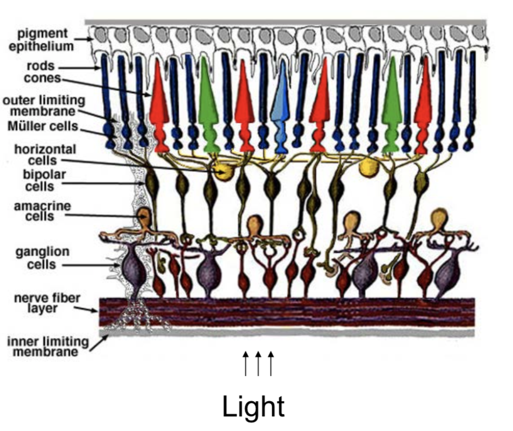
- colors are what is reflected
- cones (short = blue, medium = green, long = red)
- metamer - 2 different but indistinguishable spectra
- color spaces
- rgb - easy for devices
- chips tend to be more green
- hsv (hue, saturation, value)
- lab (perceptually uniform color space)
- rgb - easy for devices
- color constancy - ability to perceive invariant color despite ecological variations
- camera white balancing (when entire photo is too yellow or something)
- manual - choose color-neutral object and normalize
- automatic (AWB)
- grey world - force average color to grey
- white world - force brightest object to white
image processing
transformations
- 2 object properties
- pose - position and orientation of object w.r.t. the camera (6 numbers - 3 translation, 3 rotation)
- shape - relative distances of points on the object
- nonrigid objects can change shape
| Transform (most general on top) | Constraints | Invariants | 2d params | 3d params |
|---|---|---|---|---|
| Projective = homography (contains perspective proj.) | Ax + t, A nonsingular, homogenous coords | parallel -> intersecting | 8 (-1 for scale) | 15 (-1 for scale) |
| Affine | Ax + t, A nonsingular | parallelism, midpoints, intersection | 6=4+2 | 12=9+3 |
| Euclidean = Isometry | Ax + t, A orthogonal | length, angles, area | 3=1+2 | 6=3+3 |
| Orthogonal (rotation when det = 1 / reflection when det = -1) | Ax, A orthogonal | 1 | 3 |
-
projective transformation = homography
- homogenous coordinates - use n + 1 coordinates for n-dim space to help us represent points at $\infty$
- $[x, y] \to [x_1, x_2, x_3]$ with $x = x_1/x_3, y=x_2/x_3$
- $[x_1, x_2] = \lambda [x_1, x_2] \quad \forall \lambda \neq 0$ - each points is like a line through origin in n + 1 dimensional space
- even though we added a coordinate, didn’t add a dimension
- standardize - make third coordinate 1 (then top 2 coordinates are euclidean coordinates)
- when third coordinate is 0, other points are infinity
- all 0 disallowed
- Euclidean line $a_1x + a_2y + a_3=0$ $\iff$ homogenous line $a_1 x_1 + a_2x_2 + a_3 x_3 = 0$
- $[x, y] \to [x_1, x_2, x_3]$ with $x = x_1/x_3, y=x_2/x_3$
- perspective maps parallel lines to lines that intersect
- incidence of points on lines
- when does a point $[x_1, x_2, x_3]$ lie on a line $[a_1, a_2, a_3]$ (homogenous coordinates)
- when $\mathbf{x} \cdot \mathbf{a} = 0$
- cross product gives intersection of any 2 lines
- representing affine transformations: $\begin{bmatrix}X’\Y’\W’\end{bmatrix} = \begin{bmatrix}a_{11} & a_{12} & t_x\ a_{21} & a_{22} & t_y \ 0 & 0 & 1\end{bmatrix}\begin{bmatrix}X\Y\1\end{bmatrix}$
- representing perspective projection: $\begin{bmatrix}1 & 0& 0 & 0\ 0 & 1 & 0 & 0 \ 0 & 0 & 1/f & 0 \end{bmatrix} \begin{bmatrix}X\Y\Z \ 1\end{bmatrix} = \begin{bmatrix}X\Y\Z/f\end{bmatrix} = \begin{bmatrix}fX/Z\fY/Z\1\end{bmatrix}$
- homogenous coordinates - use n + 1 coordinates for n-dim space to help us represent points at $\infty$
- affine transformations
- affine transformations are a a group
- examples
- anisotropic scaling - ex. $\begin{bmatrix}2 & 0 \ 0 & 1 \end{bmatrix}$
- shear
- euclidean transformations = isometries = rigid body transform
-
preserves distances between pairs of points: $ \psi(a) - \psi(b) = a-b $ - ex. translation $\psi(a) = a+t$
- composition of 2 isometries is an isometry - they are a group
-
- orthogonal transformations - preserves inner products $\forall a,b : a \cdot b =a^T A^TA b$
- $\implies A^TA = I \implies A^T = A^{-1}$
- $\implies det(A) = \pm 1$
- 2D
- really only 1 parameter $ \theta$ (also for the +t)
- $A = \begin{bmatrix}cos \theta & - sin \theta \ sin \theta & cos \theta \end{bmatrix}$ - rotation, det = +1
- $A = \begin{bmatrix}cos \theta & sin \theta \ sin \theta & - cos \theta \end{bmatrix}$ - reflection, det = -1
- 3D
- really only 3 parameters
- ex. $A = \begin{bmatrix}cos \theta & - sin \theta & 0 \ sin \theta & cos \theta & 0 \ 0 & 0 & 1\end{bmatrix}$ - rotation, det rotate about z-axis (like before)
- 2D
- rotation - orthogonal transformations with det = +1
- 2D: $\begin{bmatrix}cos \theta & - sin \theta \ sin \theta & cos \theta \end{bmatrix}$
- 3D: $ \begin{bmatrix}cos \theta & - sin \theta & 0 \ sin \theta & cos \theta & 0 \ 0 & 0 & 1\end{bmatrix}$ (rotate around z-axis)
- lots of ways to specify angles
- axis plus amount of rotation - we will use this
- euler angles
- quaternions (generalize complex numbers)
- Roderigues formula - converts: $R = e^{\phi \hat{s}} = I + sin [\phi] : \hat{s} + (1 - cos \phi) \hat{s}^2$
-
$s$ is a unit vector along $w$ and $\phi= w t$ is total amount of rotation - rotation matrix
- can replace cross product with matrix multiplication with a skew symmetric $(B^T = -B)$ matrix:
- $\begin{bmatrix} t_1 \ t_2 \ t_3\end{bmatrix}$ ^ $\begin{bmatrix} x_1 \ x_2 \ x_3 \end{bmatrix} = \begin{bmatrix} t_2 x_3 - t_3 x_2 \ t_3 x_1 - t_1 x_3 \ t_1 x_2 - t_2 x_1\end{bmatrix}$
- $\hat{t} = [t_\times] = \begin{bmatrix} 0 & -t_3 & t_2 \ t_3 & 0 & -t_1 \ -t_2 & t_1 & 0\end{bmatrix}$
- proof
- $\dot{q(t)} = \hat{w} q(t)$
- $\implies q(t) = e^{\hat{w}t}q(0)$
- where $e^{\hat{w}t} = I + \hat{w} t + (\hat{w}t)^2 / w! + …$
- can rewrite in terms above
-
image preprocessing
- image is a function from $R^2 \to R$
- f(x,y) = reflectance(x,y) * illumination(x,y)
- image histograms - treat each pixel independently
- better to look at CDF
- use CDF as mapping to normalize a histogram
- histogram matching - try to get histograms of all pixels to be same
- need to map high dynamic range (HDR) to 0-255 by ignoring lots of values
- do this with long exposure
- point processing does this transformation independent of position x, y
- can enhance photos with different functions
- negative - inverts
- log - can bring out details if range was too large
- contrast stretching - stretch the value within a certain range (high contrast has wide histogram of values)
- sampling
- sample and write function’s value at many points
- reconstruction - make samples back into continuous function
- ex. audio -> digital -> audio
- undersampling loses information
- aliasing - signals traveling in disguise as other frequencies
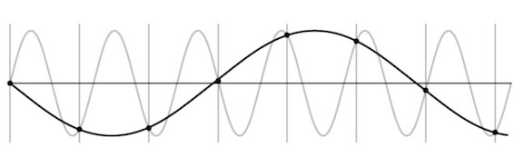
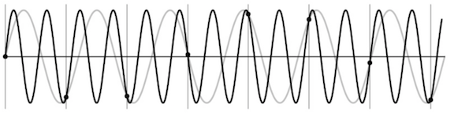
- antialiasing
- can sample more often
- make signal less wiggly by removing high frequencies first
- filtering
- lowpass filter - removes high frequencies
- linear filtering - can be modeled by convolution
- cross correlation - what cnns do, dot product between kernel and neighborhood
- sobel filter is edge detector
- gaussian filter - blur, better than just box blur
- rule of thumb - set filter width to about 6 $\sigma$
- removes high-frequency components
- convolution - cross-correlation where filter is flipped horizontally and vertically
- commutative and associative
- convolution theorem: $F[g*h] = F[g]F[h]$ where F is Fourier, * is convolution
- convolution in spatial domain = multiplication in frequency domain
- resizing
- Gaussian (lowpass) then subsample to avoid aliasing
- image pyramid - called pyramid because you can subsample after you blur each time
- whole pyramid isn’t much bigger than original image
- collapse pyramid - keep upsampling and adding
- good for template matching, search over translations
- sharpening - add back the high frequencies you remove by blurring (laplacian pyramid):
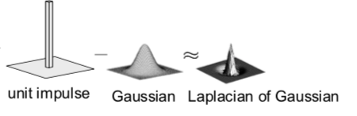
edges + templates
- edge - place of rapid change in the image intensity function
-
solns
- smooth first, then take gradient
- gradient first then smooth gives same results (linear operations are interchangeable)
-
derivative theorem of convolution - differentiation can also be though of as convolution
- can convolve with deriv of gaussian
- can give orientation of edges
- tradeoff between smoothing (denoising) and good edge localization (not getting blurry edges)
- image gradient looks like edges
-
canny edge detector
- filter image w/ deriv of Gaussian
- find magnitude + orientation of gradient
- non-maximum suppression - does thinning, check if pixel is local maxima
- anything that’s not a local maximum is set to 0
- on line direction, require a weighted average to interpolate between points (bilinear interpolation = average on edges, then average those points)
- hysteresis thresholding - high threshold to start edge curves then low threshold to continue them
- Scale-space and edge detection using anisotropic diffusion (perona & malik 1990)
- introduces anisotropic diffusion (see wiki page) - removes image noise without removing content
- produces series of images, similar to repeatedly convolving with Gaussian
- filter review
- smoothing
- no negative values
- should sum to 1 (constant response on constant)
- derivative
- must have negative values
- should sum to 0 (0 response on constant)
- intuitive to have positive sum to +1, negative sum to -1
- smoothing
- matching with filters (increasing accuracy, but slower)
- ex. zero-mean filter subtract mean of patch from patch (otherwise might just match brightest regions)
- ex. SSD - L2 norm with filter
- doesn’t deal well with intensities
- ex. normalized cross-correlation
- recognition
- instance - “find me this particular chair”
- simple template matching can work
- category - “find me all chairs”
- instance - “find me this particular chair”
texture
- texture - non-countable stuff
- related to material, but different
- texture analysis - compare 2 things, see if they’re made of same stuff
- pioneered by bela julesz
- random dot stereograms - eyes can find subtle differences in randomness if fed to different eyes
- human vision sensitive to some difference types, but not others
- easy to classify textures based on v1 gabor-like features
- can make histogram of filter response histograms - convolve filter with image and then treat each pixel independently
- heeger & bergen siggraph 95 - given texture, want to make more of that texture
- start with noise
- match histograms of noise with each of your filter responses
- combine them back together to make an image
- repeat this iteratively
- simoncelli + portilla 98 - also match 2nd order statistics (match filters pairwise)
- much harder, but works better
- texton histogram matching - classify images
- use “computational version of textons” - histograms of joint responses
- like bag of words but with “visual words”
- won’t get patches with exact same distribution, so need to extract good “words”
- define words as k-means of features from 10x10 patches
- features could be raw pixels
- gabor representation ~10 dimensional vector
- SIFT features: histogram set of oriented filters within each box of grid
- HOG features
- usually cluster over a bunch of images
- invariance - ex. blur signal
- each image patch -> a k-means cluster so image -> histogram
- then just do nearest neighbor on this histogram (chi-squared test is good metric)
- use “computational version of textons” - histograms of joint responses
- object recognition is really texture recognition
- all methods follow these steps
- compute low-level features
- aggregate features - k-means, pool histogram
- use as visual representation
- why these filters - sparse coding (data driven find filters)
optical flow
- simplifying assumption - world doesn’t move, camera moves
- lets us always use projection relationship $x, y = -Xf/Z, -Yf/Z$
- optical flow - movement in the image plane
- square of points moves out as you get closer
- as you move towards something, the center doesn’t change
- things closer to you change faster
- if you move left / right points move in opposite direction
- rotations also appear to move opposite to way you turn your head
- square of points moves out as you get closer
- equations: relate optical flow in image to world coords
- optical flow at $(u, v) = (\Delta x / \Delta t, \Delta y/ \Delta t)$ in time $\Delta t$
- function in image space (produces vector field)
- $\begin{bmatrix} \dot{X}\ \dot{Y} \ \dot{Z} \end{bmatrix} = -t -\omega \times \begin{bmatrix} X \ Y \ Z\end{bmatrix} \implies \begin{bmatrix} \dot{x}\ \dot{y}\end{bmatrix}= \frac{1}{Z} \begin{bmatrix} -1 & 0 & x\ 0 & 1 & y\end{bmatrix} \begin{bmatrix} t_x \ t_y \ t_z \end{bmatrix}+ \begin{bmatrix} xy & -(1+x^2) & y \ 1+y^2 & -xy & -x\end{bmatrix}\begin{bmatrix} \omega_x \ \omega_y \ \omega_z\end{bmatrix}$
- decomposed into translation component + rotation component
- $t_z / Z$ is time to impact for a point
- optical flow at $(u, v) = (\Delta x / \Delta t, \Delta y/ \Delta t)$ in time $\Delta t$
- translational component of flow fields is more important - tells us $Z(x, y)$ and translation $t$
- we can compute the time to contact
- this is a key to what is used in video compression
cogsci / neuro
psychophysics
- julesz search experiment
- “pop-out” effect of certain shapes (e.g. triangles but not others)
- axiom 1: human vision has 2 modes
- preattentive vision - parallel, instantaneous (~100-200 ms)
- large visual field, no scrutiny
- surprisingly large amount of what we do
- ex. sensitive to size/width, orientation changes
- attentive vision - serial search with small focal attention in 50 ms steps
- preattentive vision - parallel, instantaneous (~100-200 ms)
- axiom 2: textons are the fundamental elements in preattentive vision
- texton is invariant in preattentive vision
- ex. elongated blobs (rectangles, ellipses, line segments w/ orientation/width/length)
- ex. terminators - ends of line segments
- crossing of line segments
- julesz conjecture (not quite true) - textures can’t be spontaneously discriminated if they have same first-order + second-order statistics (ex. density)
- humans can saccade to correct place in object detection really fast (150 ms - Kirchner & Thorpe, 2006)
- still in preattentive regime
- can also do object detection after seeing image for only 40 ms
neurophysiology
- on-center off-surround - looks like Laplacian of a Gaussian
- horizontal cell “like convolution”
- LGN does quick processing
- hubel & wiesel - single-cell recording from visual cortex in v1
- 3 v1 cell classes
- simple cells - sensitive to oriented lines
- oriented Gaussian derivatives
- some were end-stopped
- complex cells - simple cells with some shift invariance (oriented lines but with shifts)
- could do this with maxpool on simple cells
- hypercomplex cells (less common) - complex cell, but only lines of certain length
- simple cells - sensitive to oriented lines
- retinotopy - radiation stain on retina maintained radiation image
- hypercolumn - cells of different orientations, scales grouped close together for a location
perceptual organization
- max werthermian - we perceive things not numbers
- principles: grouping, element connectedness
- figure-ground organization: surroundedness, size, orientation, contrast, symmetry, convexity
- gestalt - we see based on context
correspondence + applications (steropsis, optical flow, sfm)
binocular steropsis
- stereopsis - perception of depth
- disparity - difference in image between eyes
- this signals depth (0 disparity at infinity)
- measured in pixels (in retina plane) or angle in degrees
- sign doesn’t really matter
- active stereopsis - one projector and one camera vs passive (ex. eyes)
- active uses more energy
- ex. kinect - measure / triangulate
- worse outside
- ex. lidar - time of light - see how long it takes for light to bounce back
- 3 types of 2-camera configurations: single point, parallel axes, general case
single point of fixation (common in eyes)
- fixation point has 0 disparity
- humans do this to put things in the fovea
- use coordinates of cyclopean eye
- vergence movement - look at close / far point on same line
- change angle of convergence (goes to 0 at $\infty$)
- disparity = $ 2 \delta \theta = b \cdot \delta Z / Z^2$ where b - distance between eyes, $\delta Z$ - change in depth, Z - depth
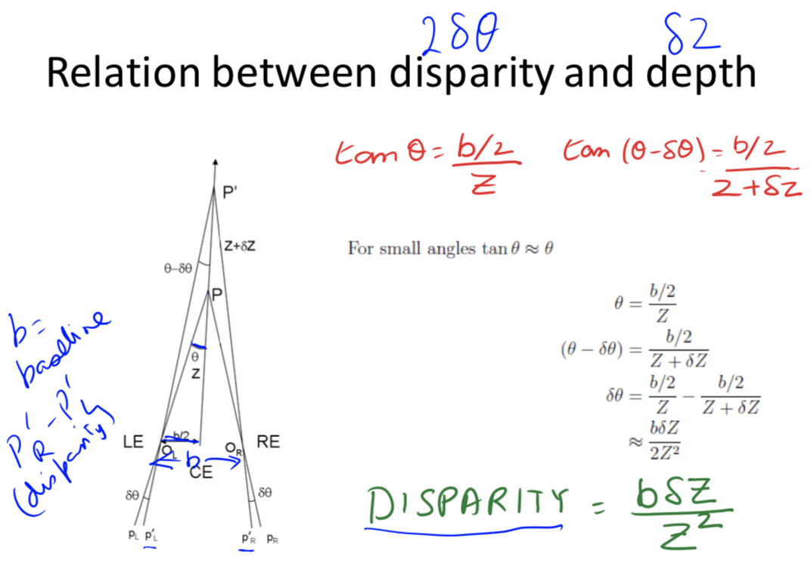
- b - distance between eyes, $\delta$ - change in depth, Z - depth
- change angle of convergence (goes to 0 at $\infty$)
- version movement - change direction of gaze
- forms Vieth-Muller circle - points lie on same circle with eyes
- cyclopean eye isn’t on circle, but close enough
- disparity of P’ = $\alpha - \beta = 0$ on Vieth-Muller circle
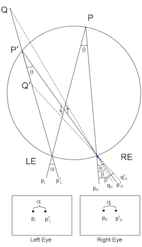
- forms Vieth-Muller circle - points lie on same circle with eyes
optical axes parallel (common in robots)
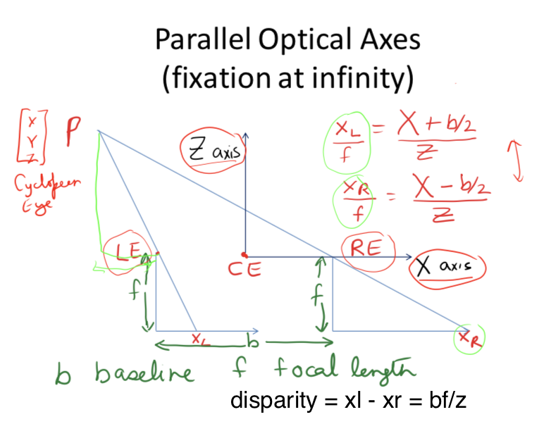
- disparity $d = x_l - x_r = bf/Z$
-
error $ \delta Z = \frac{Z^2 \delta d }{bf}$ - parallax - effect where near objects move when you move but far don’t
general case (ex. reconstruct from lots of photos)
-
given n point correspondences, estimate rotation matrix R, translation t, and depths at the n points
- more difficult - don’t know coordinates / rotations of different cameras
-
epipolar plane - contains cameras, point of fixation
- different epipolar planes, but all contain line between cameras
- $\vec{c_1 c_2}$ is on all epipolar planes
- each image plane has corresponding epipolar line - intersection of epipolar plane with image plane
- epipole - intersection of $\vec{c_1 c_2}$ and image plane
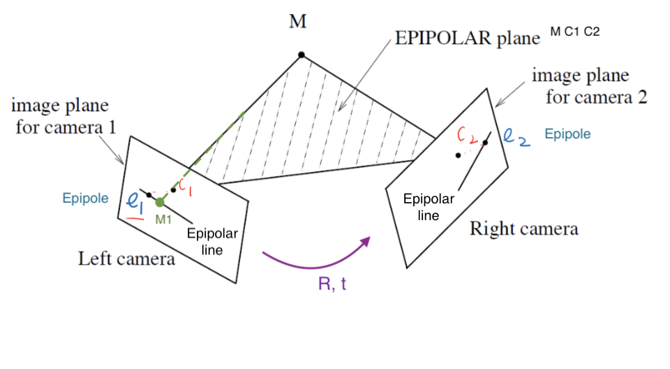
- epipole - intersection of $\vec{c_1 c_2}$ and image plane
-
structure from motion problem: given n corresponding projections $(x_i, y_i)$ in both cameras, find $(X_i, Y_i, Z_i)$ by estimating R, t: Longuet-Higgins 8-point algorithm - overall minimizing re-projection error (basically minimizes least squares = bundle adjustment)
- find $n (\geq 8)$ corresponding points
- estimate essential matrix $E = \hat{T} R$ (converts between points in normalized image coords - origin at optical center)
- fundamental matrix F corresponds between points in pixel coordinates (more degrees of freedom, coordinates not calibrated )
- essential matrix constraint: $x_1, x_2$ homogoneous coordinates of $M_1, M_2 \implies x_2^T \hat{T} R x_1 = 0$
- 6 or 5 dof; 3 dof for rotation, 3 dof for translation. up to a scale, so 1 dof is removed
- $t = c_2 - c_1, x_2$ in second camera coords, $Rx_1$ moves 1st camera coords to second camera coords
- need at least 8 pairs of corresponding points to estimate E (since E has 8 entries up to scale)
- if they’re all coplanar, etc doesn’t always work (need them to be independent)
- extract (R, t)
- triangulation
solving for stereo correspondence
- stereo correspondence = stereo matching: given point in one image, find corresponding point in 2nd image
- basic stereo matching algorithm
- stereo image rectification - transform images so that image planes are parallel
- now, epipolar lines are horizontal scan lines
- do this by using a few points to estimate R, t
- for each pixel in 1st image
- find corresponding epipolar line in 2nd image
- correspondence search: search this line and pick best match
- simple ex. parallel optical axes = assume cameras at same height, same focal lengths $\implies$ epipolar lines are horizontal scan lines
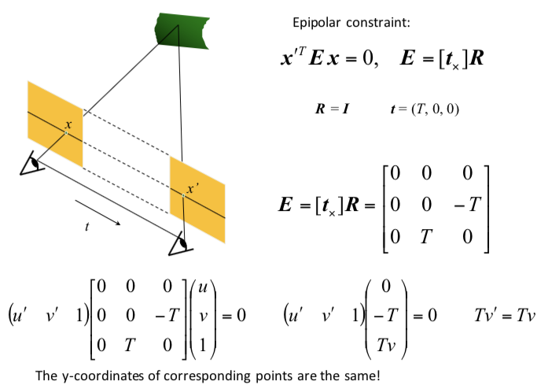
- stereo image rectification - transform images so that image planes are parallel
- correspondence search algorithms (simplest to most complex)
- assume photo consistency - same points in space will give same brightness of pixels
- take a window and use metric
- larger window smoother, less detail
- metrics
- minimize L2 norm (SSD)
- maximize dot product (NCC - normalized cross correlation) - this works a little better because calibration issues could be different
- failures
- textureless surfaces
- occlusions - have to extrapolate the disparity
- half-occlusion - can’t see from one eye
- full-occlusion - can’t see from either eye
- repetitions
- non-lambertian surfacies, specularities - mirror has different brightness from different angles
optical flow II
- related to stereo disparity except moving one camera over time
- aperture problem - looking through certain hole can change perception (ex. see movement in wrong directions)
- measure correspondence over time
- for point (x, y, t), optical flow is (u,v) = $(\Delta x / \Delta t, \Delta y / \Delta t)$
- optical flow constraint equation: $I_x u + I_y v + I_t = 0$
- assume everything is Lambertian - brightness of any given point will stay the same
- also add brightness constancy assumption - assume brightness of given point remains constant over short period $I(x_1, y_1, t_1) = I(x_1 + \Delta x, y_1 + \Delta x, t_1 + \Delta t)$
-
here, $I_x = \partial I / \partial x$
- local constancy of optical flow - assume u and v are same for n points in neighborhood of a pixel
- rewrite for n points(left matrix is A): $\begin{bmatrix} I_x^1 & I_y^1\ I_x^2 & I_y^2\ \vdots & \vdots \ I_x^n & I_y^n\ \end{bmatrix}\begin{bmatrix} u \ v\end{bmatrix} = - \begin{bmatrix} I_t^1\ I_t^2\ \vdots \ I_t^n\\end{bmatrix}$
- then solve with least squares $\begin{bmatrix} u \ v\end{bmatrix}=-(A^TA^{-1} A^Tb)$
- second moment matrix $A^TA$ - need this to be high enough rank
general correspondence + interest points
- more general correspondence - matching points, patches, edges, or regions across images (not in the same basic image)
- most important problem - used in steropsis, optical flow, structure from motion
- 2 ways of finding correspondences
- align and search - not really used
- keypoint matching - find keypoint that matches and use everything else
- 3 steps to kepoint matching: detection, description, matching
detection - identify key points
- find ‘corners’ with Harris corner detector
- shift small window and look for large intensity change in multiple directions
- edge - only changes in one direction
- compare auto-correlation of window (L2 norm of pixelwise differences)
- very slow naively - instead look at gradient (Taylor series expansion - second moment matrix M)
- if gradient isn’t flat, then it’s a corner
- look at eigenvalues of M
- eigenvalues tell you about magnitude of change in different directions
- if same, then circular otherwise elliptical
- corner - 2 large eigenvalues, similar values
- edge - 1 eigenvalue larger than other
- simple way to compute this: $det(M) - \alpha : trace(M)^2$
- apply max filter to get rid of noise
- adaptive - want to distribute points across image
- invariance properties
- ignores affine intensity change (only uses derivs)
- ignores translation/rotation
- does not ignore scale (can fix this by considering multiple scales and taking max)
description - extract vector feature for each key point
- lots of ways - ex. SIFT, image patches wrt gradient
- simpler: MOPS
- take point (x, y), scale (s), and orientation from gradients
- take downsampled rectangle around this point in proper orientation
- invariant to things like shape / lighting changes
matching - determine correspondence between 2 views
- not all key points will match - only match above some threshold
- ex. criteria: symmetry - only use if a is b’s nearest neighbor and b is a’s nearest neighbor
- better: David Lowe trick - how much better is 1-NN than 2-NN (e.g. threshold on 1-NN / 2-NN)
- problem: outliers will destroy fit
- RANSAC algorithm (random sample consensus) - vote for best transformation
- repeat this lots of times, pick the match that had the most inliers
- select n feature pairs at random (n = minimum needed to compute transformation - 4 for homography, 8 for rotation/translation)
- compute transformation T (exact for homography, or use 8-point algorithm)
- count inliers (how many things agree with this match)
- 8-point algorithm / homography check
- $x^TEx < \epsilon $ for 8-point algorithm or $x^THx < \epsilon$ for homography
- ate end could recompute least squares H or F on all inliers
- repeat this lots of times, pick the match that had the most inliers
correspondence for sfm / instance retrieval
-
sfm (structure for motion) - given many images, simultaneously do 2 things
- calibration - find camera parameters
- triangulation - find 3d points from 2d points
- structure for motion system (ex. photo tourism 2006 paper)
- camera calibration: determine camera parameters from known 3d points
- parameters
- internal parameters - ex. focal length, optical center, aspect ratio
- external parameters - where is the camera
- only makes sense for multiple cameras
- approach 1 - solve for projection matrix (which contains all parameters)
- requires knowing the correspondences between image and 3d points (can use calibration object)
- least squares to find points from 3x4 projection matrix which projects (X, Y, Z, 1) -> (x, y, 1)
- approach 2 - solve for parameters
- translation T, rotation R, focal length f, principle point (xc, yc), pixel size (sx, sy)
- can’t use homography because there are translations with changing depth
- sometimes camera will just list focal length
- decompose projection matrix into a matrix dependent on these things
- nonlinear optimization
- translation T, rotation R, focal length f, principle point (xc, yc), pixel size (sx, sy)
- parameters
- triangulation - predict 3d points $(X_i, Y_i, Z_i)$ given pixels in multiple cameras $(x_i, y_i)$ and camera parameters $R, t$
-
minimize reprojection error (bundle adjustment): $\sum_i \sum_j \underbrace{w_{ij}}_{\text{indicator var}}\cdot \underbrace{P(x_i, R_j, t_j)}{\text{pred. im location}} - \underbrace{\begin{bmatrix} u{i, j}\v_{i, j}\end{bmatrix}}_{\text{observed m location}} ^2$ - solve for matrix that projects points into 3d coords
-
- camera calibration: determine camera parameters from known 3d points
- incremental sfm: start with 2 cameras
- initial pair should have lots of matches, big baseline (shouldn’t just be a homography)
- solve with essential matrix
- then iteratively add cameras and recompute
- good idea: ignore lots of data since data is cheap in computer vision
- search for similar images - want to establish correspondence despite lots of changes
- see how many keypoint matches we get
- search with inverted file index
- ex. visual words - cluster the feature descriptors and use these as keys to a dictionary
- inverted file indexing
- should be sparse
- spatial verification - don’t just use visual words, use structure of where the words are
- want visual words to give similar transformation - RANSAC with some constraint
deep learning
cnns
- object recognition - visual similarity via labels
- classification
- linear boundary -> nearest neighbors
- neural nets
- don’t need feature extraction step
- high capacity (like nearest neighbors)
- still very fast test time
- good at high dimensional noisy inputs (vision + audio)
- pooling - kind of robust to exact locations
- a lot like blurring / downsampling
- everyone now uses maxpooling
- history: lenet 1998
- neurocognition (fukushima 1980) - unsupervised
- convolutional neural nets (lecun et al) - supervised
- alexnet 2012
- used norm layers (still common?)
- resnet 2015
- 152 layers
- 3x3s with skip layers
- like nonparametric - number of params is close to number of data points
- network representations learn a lot
- zeiler-fergus - supercategories are learned to be separated, even though only given single class lavels
- nearest neighbors in embedding spaces learn things like pose
- can be used for transfer learning
- fancy architectures - not just a classifier
- siamese nets
- ex. want to compare two things (ex. surveillance) - check if 2 people are the same (even w/ sunglasses)
- ex. connect pictures to amazon pictures
- embed things and make loss function distance between real pics and amazon pics + make different things farther up to some margin
- ex. searching across categories
- multi-modal
- ex. could look at repr. between image and caption
- semi-supervised
- context as supervision - from word predict neighbors
- predict neighboring patch from 8 patches in image
- multi-task
- many tasks / many losses at once - everything will get better at once
- differentiable programming - any nets that form a DAG
- if there are cycles (RNN), unroll it
- fully convolutional
- works on different sizes
- this lets us have things per pixel, not per image (ex. semantic segmentation, colorization)
- usually use skip connections
- siamese nets
image segmentation
- consistency - 2 segmentations consistent when they can be explained by same segmentation tree
- percept tree - describe what’s in an image using a tree
- evaluation - how to correspond boundaries?
- min-cost assignment on bipartite graph=bigraph - connections only between groundtruth, signal:
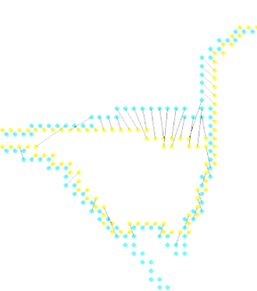
- min-cost assignment on bipartite graph=bigraph - connections only between groundtruth, signal:
- ex. for each pixel predict if it’s on a boundary by looking at window around it
- proximity cue
- boundary cues: brightness gradient, color gradient, texture gradient (gabor responses)
- look for sharp change in the property
- region cue - patch similarity
- proximity
- graph partitioning
- learn cue combination by fitting linear combination of cues and outputting whether 2 pixels are in same segmentation
- graph partitioning approach: generate affinity graph from local cues above (with lots of neighbors)
- normalized cuts - partition so within-group similarity is large and between-group similarity is small
- deep semantic segmentation - fully convolutional
- upsampling
- unpooling - can fill all, always put at top-left
- max-unpooling - use positions from pooling layer
- learnable upsampling = deconvolution = upconvolution = fractionally strided convolution = backward strided convolution - transpose the convolution
- upsampling
classification + localization
- goal: coords (x, y, w, h) for each object + class
- simple: sliding window and use classifier each time - computationally expensive!
- region proposals - find blobby image regions likely to contain objects and run (fast)
- R-CNN - run each region of interest, warped to some size, through CNN
- Fast R-CNN - get ROIs from last conv layer, so everything is faster / no warping
- to maintain size, fix number of bins instead of filter sizes (then these bins are adaptively sized) - spatial pyramid pooling layer
- Faster R-CNN - use region proposal network within network to do region proposals as well
- train with 4 losses for all things needed
- region proposal network uses multi-scale anchors and predicts relative to convolution
- instance segmentation
- mask-rcnn - keypoint detection then segmentation
learning detection
- countour detection - predict contour after every conv (at different scales) then interpolate up to get one final output (ICCV 2015)
- deep supervision helps to aggregate multiscale info
- semantic segmentation - sliding window
- classification + localization
- need to output a bounding box + classify what’s in the box
- bounding box: regression problem to output box
- use locations of features
- feature map
- location of a feature in a feature map is where it is in the image (with finer localization info accross channels)
- response of a feature - what it is
modeling figure-ground
- figure is closer, ground background - affects perception
- figure/ground datasets
- local cues
- edge features: shapemes - prototypical local shapes
- junction features: line labelling - contour directions with convex/concave images
- lots of principles
- surroundedness, size, orientation, constrast, symmetry, convexity, parallelism, lower region, meaningfulness, occlusion, cast shadows, shading
- global cues
- want consistency with CRF
- spectral graph segmentation
- embedding approach - satisfy pairwise affinities
single-view 3d construction
- useful for planning, depth, etc.
- different levels of output (increasing complexity)
- image depth map
- scene layout - predict simple shapes of things
- volumetric 3d - predict 3d binary voxels for which voxels are occupied
- could approximate these with CAD models, deformable shape models
- need to use priors of the world
- (explicit) single-view modeling - assume a model and fit it
- many classes are very difficult to model explicitly
- ex. use dominant edges in a few directions to calculate vanishing points and then align things
- (implicit) single-view prediction - learn model of world data-driven
- collect data + labels (ex. sensors)
- train + predict
- supervision from annotation can be wrong
unsupervised keypoint learning
- Unsupervised Learning of Visual 3D Keypoints for Control (chen, abbeel, & pathak, 2021) - learn keypoints unsupervised from video
- KeypointDeformer: Unsupervised 3D Keypoint Discovery for Shape Control (jakab…kanazawa, 2021) - learn to predict keypoints completely unsupervised
- can also manipulate keypoints and generate new shape
- Lions and Tigers and Bears: Capturing Non-Rigid, 3D, Articulated Shape From Images (zuffi, kanazawa, & black, 2018) - capture 3d shape of animals using 2d images alone
- Self-Supervised Learning of Interpretable Keypoints From Unlabelled Videos (jakab et al. 2020 cvpr) - recognize pose uses unlabelled videos + weak empirical prior on the object poses
- Unsupervised Object Keypoint Learning using Local Spatial Predictability (gopalakrishnan…schmidhuber, 2021) - identifies salient regions by trying to predict local image regions from spatial neighborhoods
- applications to Atari